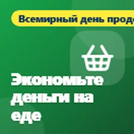

Эта страница переведена автоматически. Если что-то звучит неправильно, пожалуйста, сообщите мне.
Бесплатные технические советы для Бридлингтона и Восточного побережья
Простая помощь с телефонами, компьютерами и безопасностью в сети. Бесплатно, без необходимости ничего оформлять.
Последние советы

Бесплатные книги и телевизор, который можно слушать
Сегодня четвертый день Национальной недели Брайля, и сегодня советы посвящены книгам, радио и ТВ, которые вы можете слушать.
Бесплатные инструменты для сокращения счетов за широкополосный доступ и телефон
Сегодня Международный день искоренения бедности, поэтому я хотел поделиться некоторыми бесплатными инструментами, которые могут помочь вам сократить расходы на широкополосный доступ...

Диспраксия: технологии для передвижения
Сегодня шестой день Недели осведомленности о диспраксии, и сегодня я хочу поделиться технологиями, которые помогают вам передвигаться.

Пусть ваш телефон будет читать вам
Сегодня третий день Национальной недели Брайля, и сегодня я хочу поделиться некоторыми бесплатными способами, как заставить ваш телефон или компьютер озвучивать вещи для вас.

Диспраксия: приложения для движения
Сегодня пятый день Недели осведомленности о диспраксии, и сегодня советы посвящены движению.

Экономьте деньги на еде с помощью телефона
Сегодня Всемирный день продовольствия, поэтому я хотел поделиться некоторыми бесплатными приложениями, которые могут помочь вам сэкономить деньги на еде и не дать хорошей еде пропасть.

Бесплатные приложения, которые могут помочь вам сэкономить жизнь
Сегодня День перезапуска сердца, поэтому я хотел поделиться некоторыми бесплатными приложениями и веб-сайтами, которые могут помочь вам научиться СЛР и быть готовым помочь, если у кого-то остановилось сердце.

Передвижение с нарушением зрения
Сегодня второй день Недели Брайля, а также День безопасности для людей с белой тростью, поэтому я хотел поделиться некоторыми бесплатными приложениями, которые помогают людям с нарушениями зрения...

Диспраксия: инструменты, которые облегчают чтение
Сегодня четвертый день Недели повышения осведомленности о диспраксии, и сегодня я хотел поделиться некоторыми бесплатными инструментами, которые облегчают чтение.

Получили сообщение о пропущенной посылке?
Я хотел поделиться предупреждением о поддельных сообщениях о доставке посылок, так как это одно из самых распространенных мошенничеств в последнее время.

Диспраксия: когда трудно писать от руки
Сегодня третий день Недели повышения осведомленности о диспраксии, а сегодня советы для всех, кому трудно писать от руки.

Трудно читать свой телефон?
В эту неделю Неделя Брайля, поэтому я хотел поделиться некоторыми бесплатными функциями на вашем телефоне, которые могут иметь большое значение, если ваше зрение не то, что...

У вас есть старый телефон или ноутбук в ящике?
Сегодня Всемирный день электронных отходов, и это хорошее напоминание обо всех старых телефонах, планшетах и ноутбуках, которые лежат в ящиках. Большинство из нас имеют...

Диспраксия: инструменты для поддержания порядка
Сегодня второй день Недели осведомленности о диспраксии, и сегодня я хотел поделиться некоторыми бесплатными инструментами, которые помогают поддерживать порядок.

Ваш телефон может помочь в чрезвычайной ситуации
Сегодня Международный день снижения риска бедствий, поэтому я хотел поделиться несколькими функциями вашего телефона, которые могут действительно помочь в чрезвычайной ситуации....

Болят руки? Позвольте телефону и ноутбуку сделать работу
Сегодня Всемирный день артрита, поэтому я хотел поделиться некоторыми функциями вашего телефона и ноутбука, которые могут сделать жизнь намного проще, если у вас болят, скованы или...

Технологии, которые помогают детям учиться, а не полагаться на них
На этой неделе Неделя осведомленности о диспраксии, поэтому я хотел поделиться некоторыми способами, как технологии могут помочь детям с диспраксией. Идея в том, чтобы использовать технологии для того, чтобы помочь им...

Сделайте свой телефон полезным для вашего благополучия
Всемирный день психического здоровья был 10 октября, поэтому я хотел поделиться несколькими простыми вещами, которые ваш телефон уже может делать, чтобы помочь вам почувствовать себя немного спокойнее и более...
Что бы вы ни любили, есть сообщество для этого
Я хотел поделиться кое-чем, о чем многие люди не подозревают, что это существует.

Рекламные объявления появляются без предупреждения?
Продолжая мою статью о страшных всплывающих объявлениях, вот что делать, если на вашем телефоне Android продолжают появляться рекламы, даже когда вы не используете какое-либо приложение.
Страшное всплывающее окно на телефоне? Это просто реклама
Я хотел поделиться советом о тех страшных всплывающих окнах, которые иногда появляются на телефонах.

Ваша навигационная система устарела?
Вот быстрый совет для тех, кто все еще пользуется навигационной системой в машине.
В шорт-лист награды Time2Volunteer 2026
Я хотел поделиться новостью. Недавно меня включили в шорт-лист награды Time2Volunteer 2026 за волонтерскую деятельность, которую я делаю с местной службой технической поддержки...

Простые факты для защиты вашего компьютера
Я хотел поделиться несколькими советами о том, как защитить свой компьютер, потому что многие люди в итоге платят за антивирус, который им на самом деле не нужен.
Что такое QR-код?
Я просто хотел поделиться быстрой подсказкой о QR-кодах.
Проверьте свои таймеры отопления и горячей воды
Поскольку погода становится холоднее, сейчас хорошее время проверить свои таймеры отопления и горячей воды.
Проверьте отопление перед зимой
По мере приближения зимы сейчас хорошее время проверить отопление, особенно если вы не пользовались им в этом году много.
Просматривайте советы по темам
- Мошенничество и безопасность (4)
- Здоровье и благополучие (13)
- Деньги (2)
- Онлайн и связь (2)
- Новости (1)
- Повседневные технологии (5)
Что говорят люди
Большое спасибо, сэр
Да, определённо полезно, спасибо. Поделюсь со всеми, кому, по-моему, ваши советы пригодятся 😃
Полезно, спасибо
Получайте новые советы по электронной почте
Короткое письмо, когда я публикую новый совет. Бесплатно, и вы можете отписаться в любой момент.
Вы получите письмо для подтверждения. Письма отправляет follow.it, и в каждом есть ссылка для отписки.